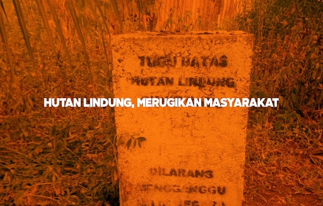

Masalah Hutan Lindung, Menyelimuti Kehidupan Masyarakat Kelurahan Gading Sari, Tanjung Sesup
Pengantar
Kelurahan Gading Sari merupakan salah satu kelurahan di Kecamatan Kundur yang merupakan hasil dari pemekaran Kelurahan Tanjung Batu Kota. Kelurahan ini lahir pada tahun 2012 dan sejak saat itu, beberapa masalah telah muncul, termasuk masalah air bersih dan hutan lindung.
Latihan Kepemimpinan Tingkat II
Himpunan Mahasiswa Kundur (HIMK) Tanjungpinang-Bintan adalah organisasi kemahasiswaan kedaerahan yang bertujuan menjadi tempat silaturahmi antara mahasiswa asal Kundur yang berkuliah di Tanjungpinang-Bintan. Salah satu agenda tahunan HIMK adalah Latihan Kepemimpinan Tingkat II, yang tahun ini dilaksanakan di tiga kecamatan di Pulau Kundur dengan tema "Herbalisasi Intelektual".
Masalah Hutan Lindung
Permasalahan hutan lindung telah menyelimuti kehidupan masyarakat Gading Sari sejak tahun 2017, ketika masyarakat tidak dapat mengurus program sertifikat gratis. Hutan lindung di Kelurahan Gading Sari tercantum dalam Keputusan Menteri Kehutanan Republik Indonesia No.SK. 463/menhut-II/2013, menyebabkan keresahan karena masyarakat tidak dapat menjual tanah yang telah mereka kelola selama puluhan tahun.
Masyarakat bingung mengapa pemerintah menetapkan wilayah Gading Sari sebagai hutan lindung tanpa survei langsung ke lokasi, menyebabkan kesalahan dalam penetapan. Keputusan ini dianggap sepihak dan merugikan masyarakat yang merasa tidak diperhatikan.
Usaha Masyarakat dan Tokoh Masyarakat
Masyarakat telah menanyakan masalah ini kepada pihak kelurahan tetapi tidak mendapat solusi. Tokoh masyarakat Gading Sari kemudian membuat forum RT RW untuk membahas masalah hutan lindung. Forum ini telah melakukan audiensi dengan Bupati Karimun, yang mencoba mengajukan pemutihan kepada Kementerian Kehutanan, namun belum ada hasilnya.
Forum RT RW juga mengajukan perwakilan untuk bertemu dengan DPR RI dan DPRD Provinsi Kepulauan Riau, tetapi belum menemukan titik terang. Pada kontestasi politik 2019, perwakilan tersebut gagal menduduki kursi DPR RI, sehingga masyarakat merasa belum ada solusi terkait hutan lindung.
Pengaruh Terhadap Kehidupan Masyarakat
Mayoritas masyarakat menggantungkan nasibnya pada hasil pertanian yang telah digarap sejak dahulu. Komoditas utama adalah karet (40%), kelapa (30%), dan hasil kebun lainnya seperti kelapa sawit dan pinang (30%). Masyarakat khawatir tanah mereka akan diambil oleh pemerintah untuk keuntungan sepihak, mengingat potensi hasil perkebunan yang tinggi.
Permasalahan hutan lindung ini tidak hanya terjadi di Gading Sari tetapi juga di beberapa daerah di Kabupaten Karimun. Salah satu solusi yang pernah didiskusikan adalah menggugat Keputusan Menteri Kehutanan melalui jalur hukum.
Kesimpulan
Data ini diambil melalui diskusi dan survei bersama masyarakat dan tokoh masyarakat saat Latihan Kepemimpinan Tingkat II HIMK pada 10-12 Agustus 2020. Permasalahan hutan lindung sangat mempengaruhi kehidupan masyarakat Gading Sari dan membutuhkan perhatian serius dari pemerintah untuk mencari solusi yang adil.
Penulis: Delvin Kurnia Sandi